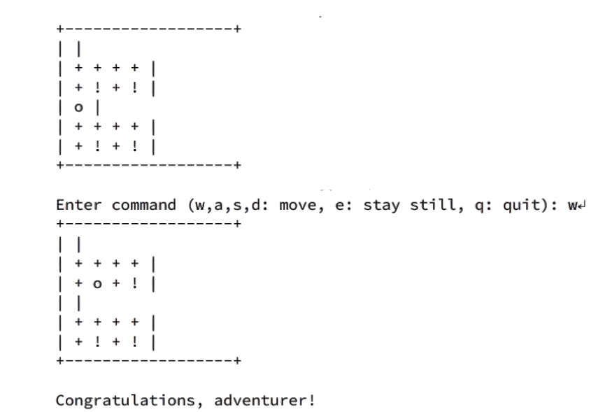
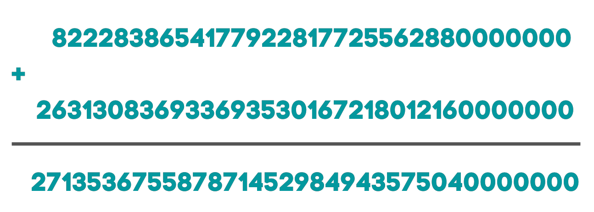

Projects 1
Implemented sorting algorithms such as bubble sort, insertion sort and selection sort using iterators and by using recursive methods.
Also, Implement a sort::insertion with traversing and accessing elements. Computed information based on information from different parts of an array.
Sorting algorithms
Projects 2
Implemented a binary search tree and printing it in a level by level format by building a constructor, copy constructor, move constructor, destructor, all different type of operators.
By using supporting functions like size, constant reference calling such as max, min, root in addition to insertion, erase, find and clone functions.
Binary Search Tree
Projects 3
Developed a code to read an in-game map (2D dynamic array dungeon crawler) to maneuver from file to file. Built multiple models and diagrams to communicate both syntax and back end code to classmates and supervisors. Updated different functions within the code (C++) such as resizing and updating different map layouts, testing magic amulets, player movements, and prepping future software upgrades. Dungeon Crawler
Projects 4
Implement with C++ a calculator that takes strings and never returns an error no matter how big the number (arithmetic with unbounded integers). String Calculator
